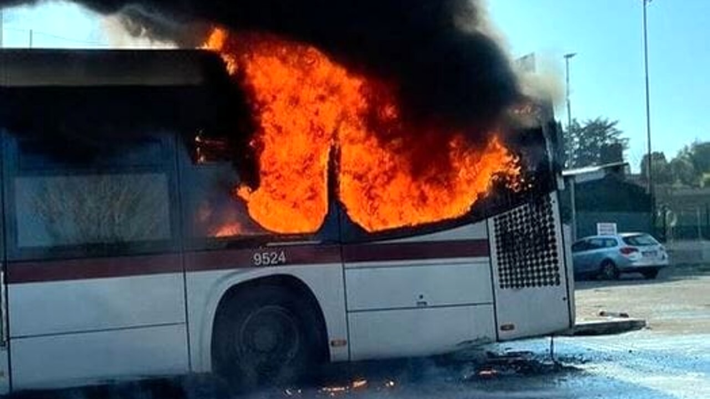
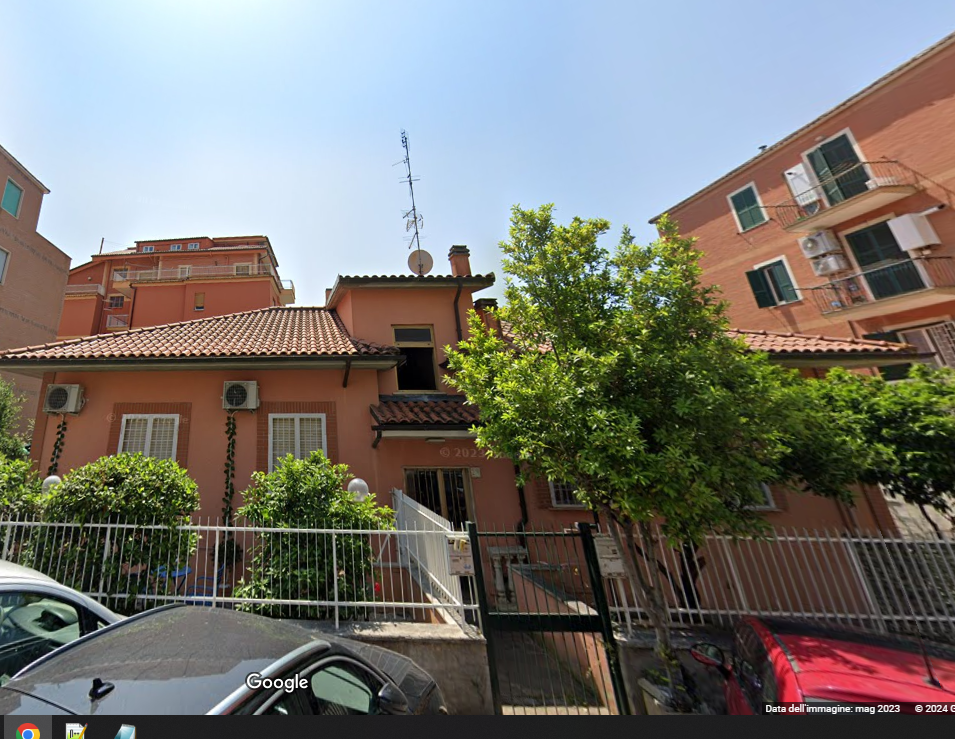

Roma - Tragedia Sfiorata in Via Agenore Zeri: Esplosione Distrugge Appartamento a causa mezzo Atac Un grave incidente ha turbato la pace di Via Agenore Zeri a Roma, dove un’appartamento è stato devastato da un’esplosione. La deflagrazione è stata provocata da un guasto al sistema di riscaldamento, aggravato dall’incendio di un autobus Atac che ha contribuito all’esplosione. Durante l’incidente, per fortuna, l’appartamento era disabitato. La proprietaria non era presente, evitando così conseguenze personali. Attualmente, sono in corso indagini preliminari e perizie tecniche per accertare le dinamiche dell’accaduto. Tra le ipotesi considerate, si esamina la possibilità che l’autobus Atac abbia preso fuoco e, a causa della pendenza della strada e di un freno a mano non adeguatamente attivato, si sia mosso fermandosi fatalmente soptto al civico 27,saturo di gas, innescando l’esplosione. Le autorità stanno indagando per determinare eventuali responsabilità e negligenze che potrebbero aver causato l’incidente. Gli inquirenti stanno valutando tutte le circostanze per fare luce sulla tragedia. Continueremo a monitorare la situazione e forniremo aggiornamenti man mano che emergono nuovi dettagli.
 